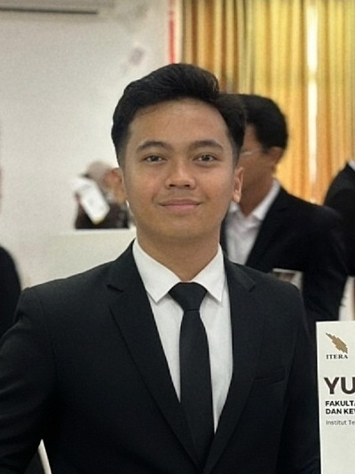

BNSP / JUL 2025
Young Road Engineering Expert
Level 7 · Badan Nasional Sertifikasi Profesi
Civil & Geotechnical Engineer
Grounded in analysis. Built for the field.
I turn ground data into practical engineering decisions — from stable slopes and haul roads to resilient infrastructure.
CURRENTLYEngineering Staff · PT. Nindya Karya (Persero)

DS / 01CPT / SPT datasets analyzed
Road alignment designed
Cut & fill volume calculated
Road reconstruction supervised
01 / Selected work
Engineering contributions across earthworks, roads, foundations, and water.
Conceptual illustrations, not project drawings. Scope and figures reflect contributions documented in my CV.
02 / Experience
Technical analysis, design delivery, and hands-on site experience.
Read the full CV ↗03 / Profile & capabilities
I'm a Civil Engineering graduate from Institut Teknologi Sumatera, working at the intersection of geotechnics and infrastructure.
Currently at PT. Nindya Karya (Persero), I contribute to post-disaster waste management infrastructure rehabilitation in Aceh through site layouts, earthwork calculations, and slope stability analysis.
PLAXIS 2D · CPT/SPT · SAP2000 · MIDAS Civil
Civil 3D · AutoCAD · Revit · Enscape · ArcGIS
HEC-RAS · Drone · Soil, pavement & concrete laboratory tools
BNSP / JUL 2025
Level 7 · Badan Nasional Sertifikasi Profesi
KEMENPU / JAN 2025
Kementerian Pekerjaan Umum
ITERA / 2021–2025
GPA 3.20 / 4.00 · Top 10 LKTIKN 2022 finalist
04 / Let's connect
For engineering opportunities, project discussions, and professional collaboration.